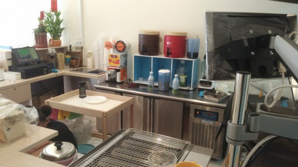
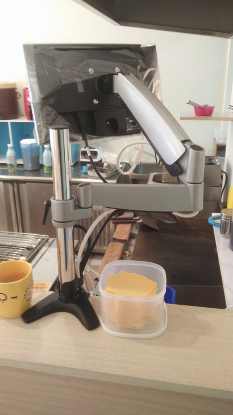
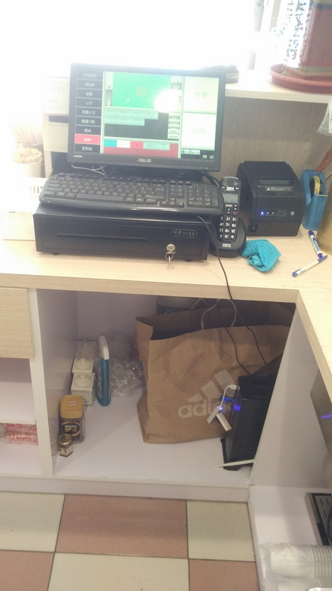

今天第一天開幕營業,使用先用POS系統,使用上真的很方便,
也都沒遇到什麼問題,因為是用WIN系統所以驅動程式安裝完整,就算一天用再久都不太會遇到什麼問題,也不會延遲(之前有用過用平板的POS,小問題一堆,用久容易LAG...之類的)也不用網路,如果是用在小餐廳上,全部組裝好的價格 CP爆表....上圖片



今天結帳時,軟體沒有協助算鈔票的程式,有點美中不足
EX:千鈔 百抄 五十 十元 一元 可以輸入數量 程式直接加總
雖然可以用計算機,可是計算機只能個別輸入鈔票數量 再自己全部加總 ...
那EXCEL是可以使用,可是就無法用螢幕觸控的方式,必須拿出鍵盤
希望站長可以加入此功能˙